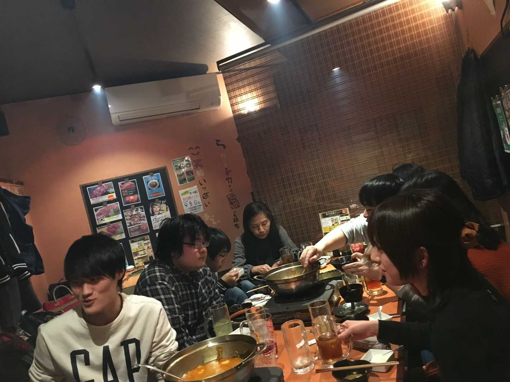

-

視覚情報処理研究室
Visual Information Processing Laboratory
-

視覚情報処理研究室
Visual Information Processing Laboratory
-

視覚情報処理研究室
Visual Information Processing Laboratory
視覚情報処理研究室（Visual Information Science : VIP）では、画像・映像認識とディープラーニングを扱った研究に取り組んでいます。
この研究室は昨年、名古屋大学からいらっしゃった加藤ジェーン先生が立ち上げました。立命館大学の研究室としては歴史が浅いですが、名古屋大学の先輩方が残した題材は面白いものが多く、歴史も功績もあります。
具体的な研究内容は、歩行者検出、運転の推定、映像の暴力度レーティング、映像要約、蝶の詳細認識、人物行動認識などです。
詳細は下記のスライドでご確認ください。
研究室の雰囲気は、各々が主体的な人が多く、和やかです。
皆で作り上げていこうという気持ちも強く、留学生の方も多いためグローバルな研究室です。
研究室公開を下記日程（各回30分程度）で行います。また、研究室公開日程中（6/10-6/19）はそれ以外の時間も解放していますので興味がある方は是非見学に来て下さい。お待ちしています。
本研究では、公開されている単一ビューの車載カメラ画像データセットの中から運転操作データセットを用いて、単一ビュー画像から深さマップに変換する方法を研究して、優秀な方法を見つけます。
CNN (Convolutional Neural Network)を利用し、 単一ビュー画像から深さマップに変換する方法を研究して、既存の研究よりいい高精度運転操作推定システムの構築に取り組みます。
また、関連する研究のモデルを探し、最適なディープラーニングモデルを作る予定です。
最終的には深さマップと前述の単一ビュー画像を組み合わせて、モデルに入力し、トレーニングを行うことで、車載カメラから単一ビュー画像を用いて既存の研究よりいい高精度運転操作推定システムを完成させます。

近年、自動車の普及するとともに、交通事故の可能性が増加しています。
それに伴い、精度の良い自動運転技術による自動運転支援の需要が高まっています。
しかし、既存の運転操作推定システムは「車載カメラ」に加え「LIDAR 3Dポイントマップからのデータセット」を使用しているため、車載カメラだけよりもライダー機器を用いた場合、コストや故障のリスクが高く、処理時間が掛かってしまいます。
そこで本研究では単一の車載カメラのみで運転操作推定に取り組んでいます。
[1] Chen Y, Wang J, Li J, et al. Lidar-video driving dataset: Learning driving policies effectively[C]//Proceedings of the IEEE Conference on Computer Vision and Pattern Recognition. 2018: 5870-5878.
[2] Godard C, Mac Aodha O, Brostow G J. Unsupervised monocular depth estimation with left-right consistency[C]//Proceedings of the IEEE Conference on Computer Vision and Pattern Recognition. 2017: 270-279
研究室に所属しているメンバーを紹介します.視覚情報処理研究室では現在,教員が2名,D2が2名,D1が1名,M2が2名,M1が1名,B4が9名の合計17名で構成されています.
下のタブをクリックすると,メンバーの名前や教員の経歴などが掲載したものが見られます.

視覚情報処理研究室の研究業績の一覧を挙げています。
Book Chapter and Tutorial Papers / Journal Articles(雑誌論文) / International Conference(国際学会) / Domestic Conference(国内学会) / Patents(特許) / Thesis(論文) / Visiting(来歴) などはこちらから。